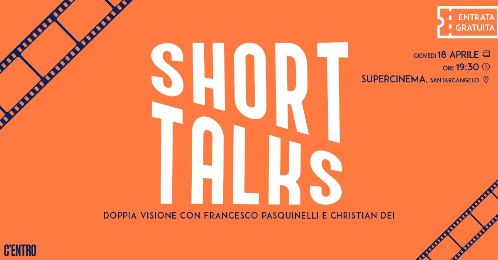
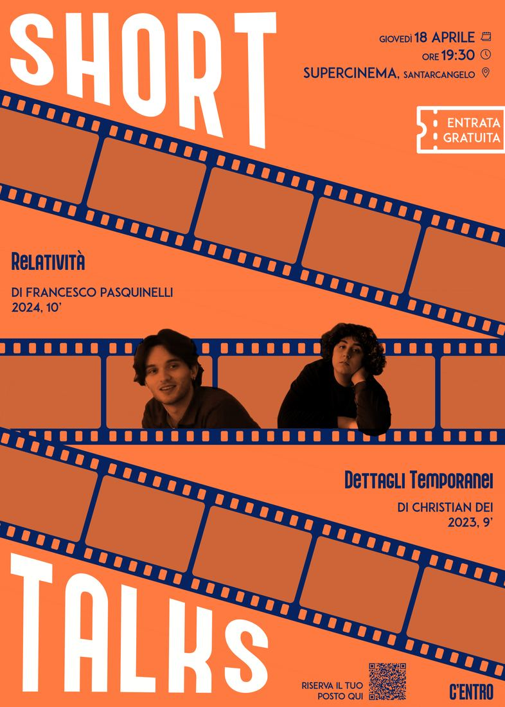
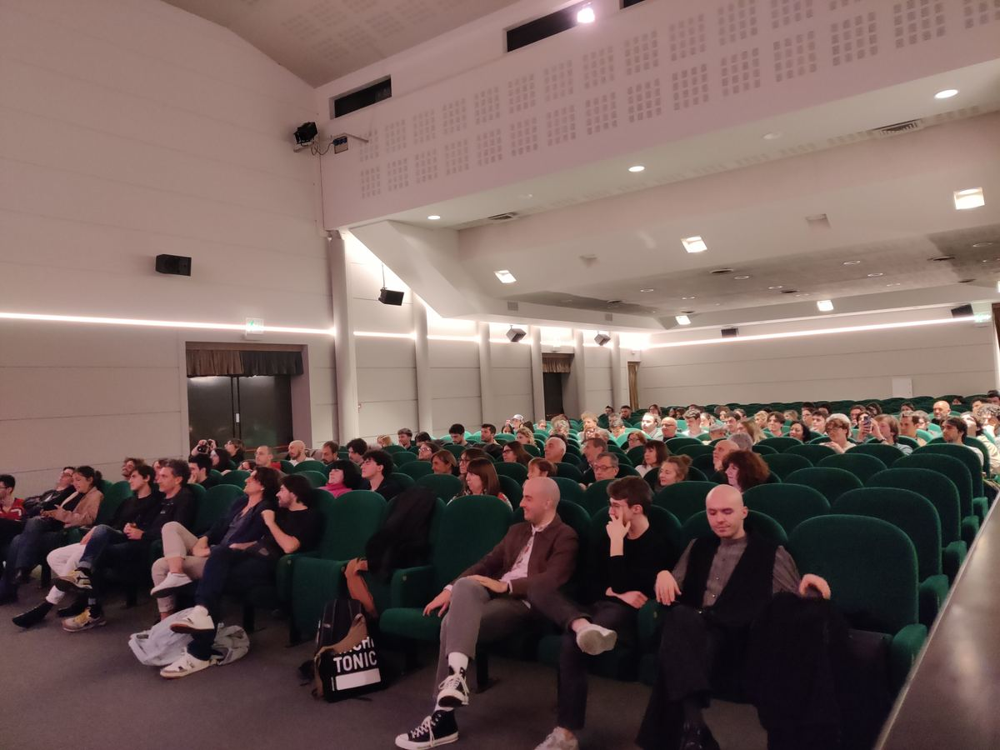
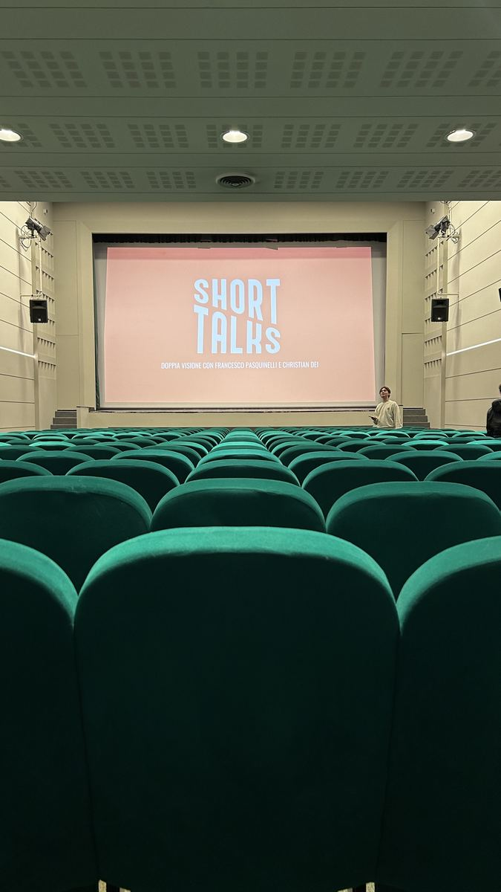
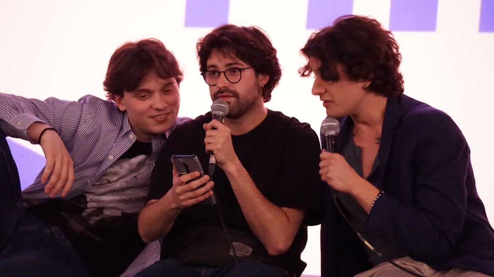
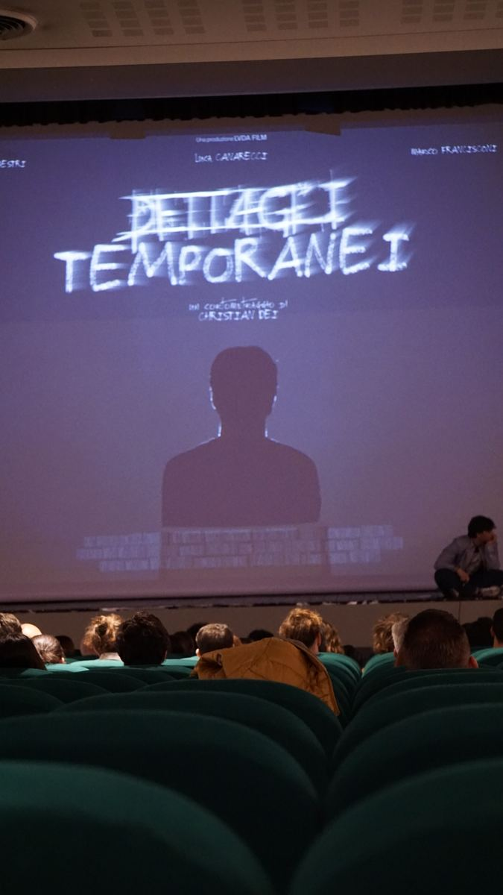
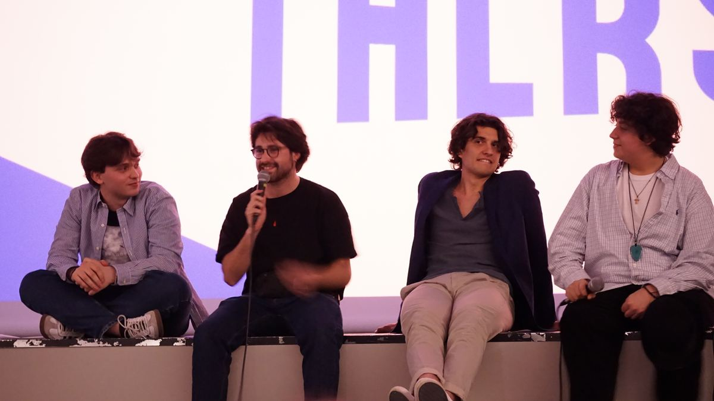
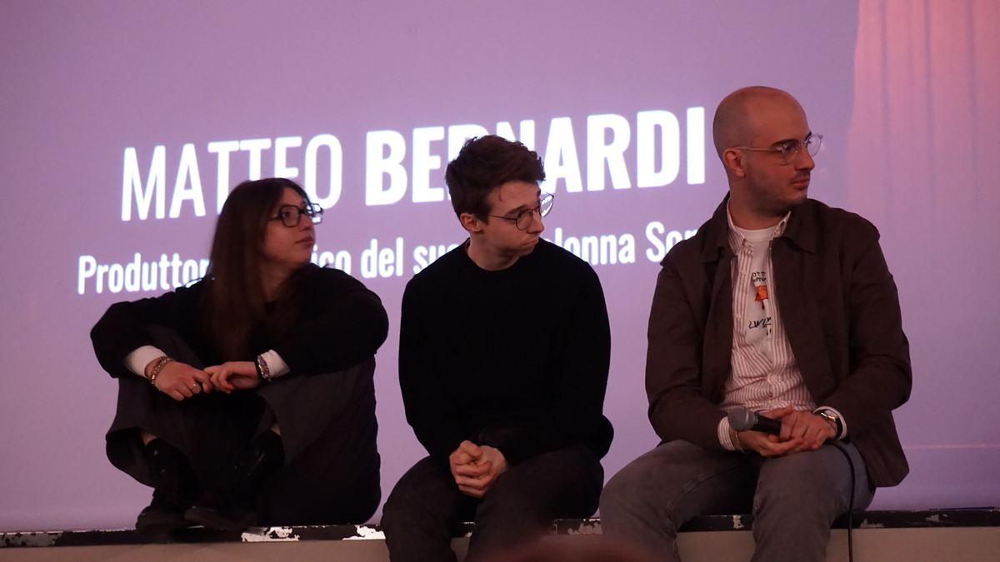

Short Talks #1
Il 18 aprile 2024, al C'entro Supercinema di Santarcangelo, nasce Short Talks: il format con cui CDL porta in sala il cinema corto, alternando cortometraggi indipendenti di giovani autori al dialogo con chi li ha realizzati. Il nome è un gioco di parole sull'inglese small talk, la conversazione leggera e informale, e richiama sia la brevità delle opere sia lo scambio diretto con il pubblico.
Programma
Doppia visione
Ogni proiezione è seguita dal dialogo con il regista e la troupe.
- Relatività Francesco Pasquinelli · CDL · 2024 · 10' Nella Cortoteca
-
Dettagli Temporanei Christian Dei · LVDA Film · 2023 · 9'

Galleria





